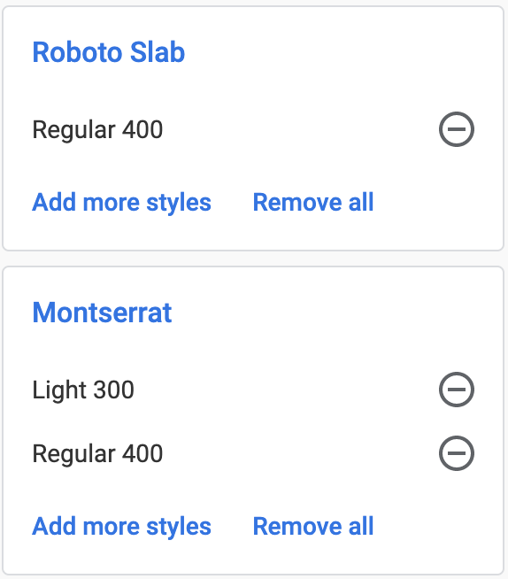
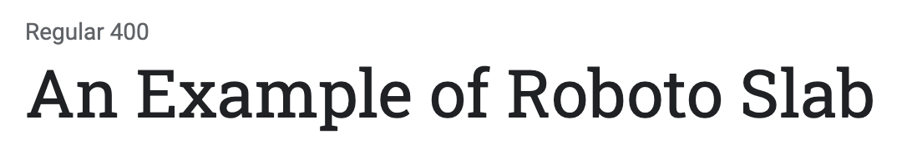
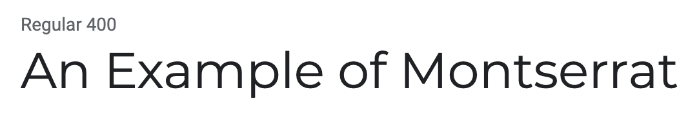
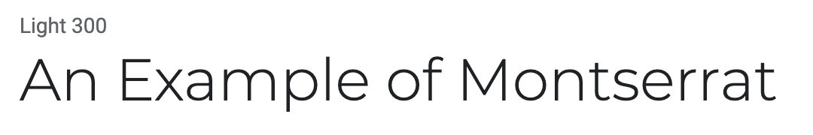

Typography Pairing
Typography Examples


The weather Eye's goal is to provide a comfortable, professional feel. The Roboto Slab and Montserrat fonts should accomplish this goal by providing an easy to read but attractive font. Because Roboto Slab is a heavier serif font, it'll be used primarily as page titles and large headings. Montserrat Regular will be used for smaller headings and Montserrat Light will be used for paragraphs.